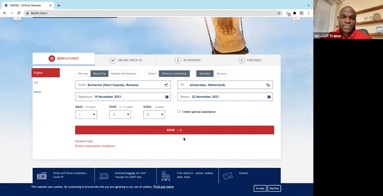
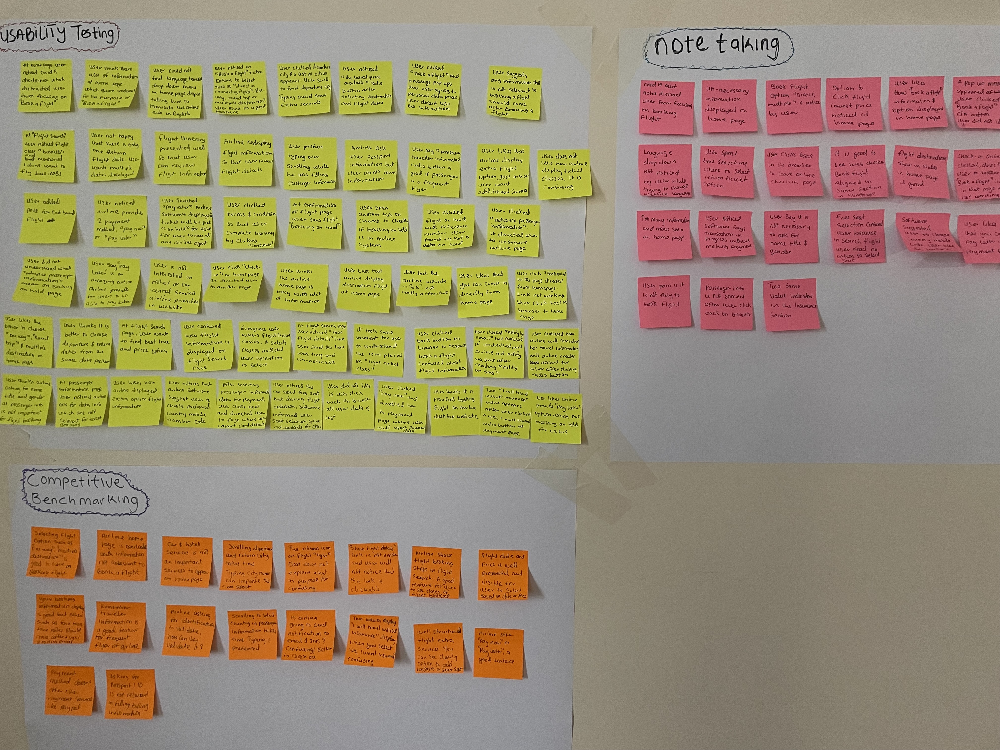

I started the research by analysing conventions and practises, pain-point and drawbacks of booking a flight on Tarom and Air Moldova desktop website. I chose both airlines because they are national carriers, neighbouring countries and they offer similar services
The competitive research has provided me with insights regarding what to avoid when designing a booking flow, as well as inspiration and guidance to follow best practises.
Usability Testing
To gather more insights into identifying more conventions and pain-points in the flight booking process of Tarom and Air Moldova, I decided to conduct more in depth quantitative research by inviting 2 frequent travellers and users of both airlines to book a flight on the airline desktop website. User 1 booked a get-way flight from Bucharest to Amsterdam for the weekend on Tarom and User 2 booked a flight from Chisinau to Amsterdam. I created a usability test script to make the session more effective and done in a timely manner.
During the session, I was taking notes while examining the positive experiences, negative reactions and pain-points of users as they book their flights and was also asking questions to improve the experience of the user. I also recorded the screen while users were booking flight for the purpose of in depth review and note taking.

Note Taking
To finalise my in depth quantitative research on conventions and pain-points in booking flights on both airlines, I watched the recordings of the 2 usability testing and took more detailed notes focusing on goals, behaviours, and context of the user.
Printscreen from note taking
Conclusion: Both users suggest that both airlines should improve their interface design and let users type personal information such as date of birth and nationality rather than scrolling to find the country. In addition, the desktop home page of airlines should focus primarily on booking and managing flights. Any other information should be displayed at the end of the booking process.
I have all data collected from multiple sources of quantitative research. I need a way to converge and make sense of all the information I have gathered during the research stage. I decided to use Affinity Diagram as it helps structure research data, uncover patterns, and put priority on what could be making a difference in the user experience of booking a flight on both airlines. I wrote the data collected in a sticky paper (using different sticky color paper) and posted them on the wall, in the category of where the data was collected during the research stage.

Next stage is i created groups according to airline flight booking process (book a flight to payment) and legends to segment the sources of data, i analysed the data in the sticky note that was posted, take out from the initial wall that it was posted and place them corresponding to each of the flight booking process as shown below in the diagram.
Going further in my analysis, I want to envision how users interact with the flight booking process and to have a holistic view and organised data. I created a user journey map and used sources from the affinity diagram to understand different goals, behaviours, pain-points and mental models that users have while booking a flight. The result of the user journey map clearly set the stage for designing the user flow process of booking flight.
As a result of the user journey map, I defined and designed the flow process for booking flights that will address the issues highlighted from the quantitative research findings. The flow diagram shows the steps the user will encounter while booking a flight i.e starting from the home page of the desktop website to the payment stage. View the flow diagram in the button after the preview image.
Going further in the design process of a new airline desktop website, I dived into sketching screens based on the flow diagram and conventions to apply into the new experience of booking flights. I used pen and paper to produce a low-fidelity prototype.